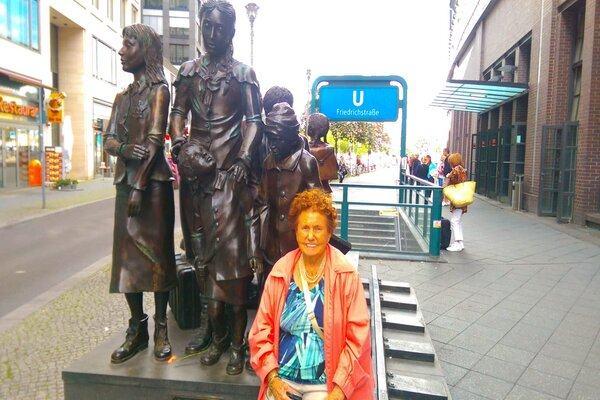
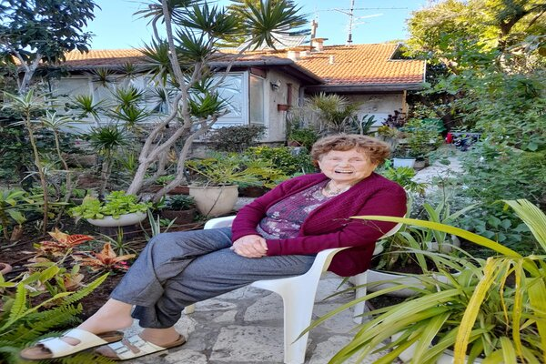

My photos




Chavah Shavitt was born in Berlin on 29/08/1930 to the name Chavah Rom.
In 193? she was sent to London as part of the Kinder transports.
Chavah was adopted by an English family and lived with them for about 7 years.
After the war, her mother came to London and take her from her adopted family and they lived together in London.
She Joined the " Habonim "youth movement in 1950 and there she meets Gabriel Shavitt, her future husband.
Later on this year she started to study physiotherapy in Sent Morris Hospital in London.
In 1952 Gabriel and Chavah married and in 1955 they moved to Israel.
First, they lived in Jerusalem for five months to learn Hebrew and after that, they moved to Ramat Hasharon where she lived today.
In 1956 she started to work as a physician in Beilinson hospital. She was the founder of the physiotherapy center in Beilinson hospital.
Chavah and Gabriel have Three children Gilon, Dotan, and Hila.
She has a big collection of owl porcelain dolls. In the post-Corona
world, she really enjoyed going out to concerts and travel the world
(especially to Canada).
Q1:
Web 1.0:
There is only limited interaction between sites and web users. Web 1.0 is simply an information portal where users passively receive information without being given the opportunity to post reviews, comments, and feedback.
Web 2.0:
Enables interaction between users and sites. Enables users to contact each other more freely. Supports collaboration and information sharing.
Web 3.0:
Computers can interpret information like humans and intelligently generate and distribute useful content tailored to the needs of users.
Three key differences:
| Web1.0 | Web2.0 | Web3.0 |
| Mostly Read-Only | Wildly Read-Write | Portable and Personal |
| Company Focus | Community Focus | Individual Focus |
| Owning Content | Sharing Content | Consolidating Content |
Q2:
Use case: Search for a place to eat lunch.
Web 1.0:
We will probably get websites with very straightforward designs and content related to a business. Allot of text without any user review.
Web 2.0:
We will get more search results with some more personal users recommendation, blogs, and not related to business content.
Web 3.0:
We will get recommendations with are more suited to our taste. We can enjoy all the community aspects of web2.0 but in a more tailored way.